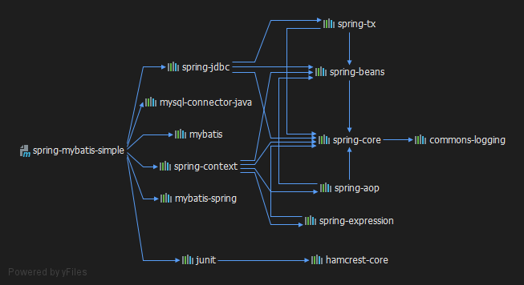

spring虽然有jdbcTemplate可以简化jdbc的相关操作，但sql语句还是会写在代码里，耦合度较高。此时专业的持久层框架mybatis的优越性就体现出来了，这里通过一个简单的例子将spring整合mybatis的相关步骤记录一下，这篇示例不会涉及表示层与业务层，仅展示整合步骤。
使用环境
- Intellij IDEA2019.3
- jdk8
- maven3.6
如何整合
spring的优势是IoC/DI，mybatis则是避免书写JDBC代码。那么我们可以把mybatis的sqlSession对象以及数据映射对象交给spring管理，仅配置java对象和映射文件即可。
在这个过程中，仅数据库驱动包、spring框架包和mybatis包是不够的，还需要mybatis-spring这个整合包，通过这个包的功能来把SqlSessionFactory配置给spring。各部分对应版本在文档简介部分有说明。
整合步骤
mysql
首先需要数据库建表，这里参考char_info表
pom.xml
需要使用的jar依赖如下
1
2
3
4
5
6
7
8
9
10
11
12
13
14
15
16
17
18
19
20
21
22
23
24
25
26
27
28
29
30
31
32
33
34
35
36
37
38
39
40
41
42
| <properties>
<spring.version>4.3.18.RELEASE</spring.version>
</properties>
<dependencies>
<dependency>
<groupId>org.springframework</groupId>
<artifactId>spring-context</artifactId>
<version>${spring.version}</version>
</dependency>
<dependency>
<groupId>org.springframework</groupId>
<artifactId>spring-jdbc</artifactId>
<version>${spring.version}</version>
</dependency>
<dependency>
<groupId>mysql</groupId>
<artifactId>mysql-connector-java</artifactId>
<version>5.1.38</version>
</dependency>
<dependency>
<groupId>org.mybatis</groupId>
<artifactId>mybatis</artifactId>
<version>3.5.4</version>
</dependency>
<dependency>
<groupId>org.mybatis</groupId>
<artifactId>mybatis-spring</artifactId>
<version>1.3.3</version>
</dependency>
<dependency>
<groupId>junit</groupId>
<artifactId>junit</artifactId>
<version>4.13</version>
<scope>test</scope>
</dependency>
</dependencies>
|
依赖关系如图

CharInfo.java
1
2
3
4
5
6
7
8
9
10
11
12
| package pojo;
public class CharInfo {
private int id;
private String name;
private String star;
private int initialCost;
private String workName;
private int workId;
}
|
CharInfoMapper接口
1
2
3
4
5
6
7
8
9
| package mapper;
import pojo.CharInfo;
import java.util.List;
public interface CharInfoMapper {
List<CharInfo> listAll();
}
|
charInfo.xml
1
2
3
4
5
6
7
8
9
| <?xml version="1.0" encoding="UTF-8"?>
<!DOCTYPE mapper
PUBLIC "-//mybatis.org//DTD Mapper 3.0//EN"
"http://mybatis.org/dtd/mybatis-3-mapper.dtd">
<mapper namespace="mapper.CharInfoMapper">
<select id="listAll" resultType="CharInfo">
select * from char_info
</select>
</mapper>
|
这里实现mybatis自动映射的关键是
- namespace需要书写接口类的全限定名
- sql语句标签的id要与接口方法名一致
- 参数类型与返回值类型需要一致(
select *比较特殊，不需要指定List，只用List内需要包装的类型即可)
applicationContext.xml(重点)
1
2
3
4
5
6
7
8
9
10
11
12
13
14
15
16
17
18
19
20
21
22
23
24
25
26
27
28
29
30
31
32
33
34
35
36
37
38
39
40
41
42
43
44
| <?xml version="1.0" encoding="UTF-8"?>
<beans xmlns="http://www.springframework.org/schema/beans"
xmlns:xsi="http://www.w3.org/2001/XMLSchema-instance"
xmlns:context="http://www.springframework.org/schema/context"
xsi:schemaLocation="http://www.springframework.org/schema/beans http://www.springframework.org/schema/beans/spring-beans.xsd http://www.springframework.org/schema/context http://www.springframework.org/schema/context/spring-context.xsd">
<context:annotation-config/>
<bean id="dataSource" class="org.springframework.jdbc.datasource.DriverManagerDataSource">
<property name="driverClassName" value="com.mysql.jdbc.Driver"/>
<property name="url" value="jdbc:mysql:///mybatis?useSSL=false"/>
<property name="username" value="root"/>
<property name="password" value="root"/>
</bean>
<bean id="sqlSession" class="org.mybatis.spring.SqlSessionFactoryBean">
<property name="dataSource" ref="dataSource"/>
<property name="mapperLocations" value="classpath:mapper/*.xml"/>
<property name="typeAliasesPackage" value="pojo"/>
<property name="configuration">
<bean class="org.apache.ibatis.session.Configuration">
<property name="mapUnderscoreToCamelCase" value="true"/>
</bean>
</property>
</bean>
<bean class="org.mybatis.spring.mapper.MapperScannerConfigurer">
<property name="basePackage" value="mapper"/>
</bean>
</beans>
|
测试代码
1
2
3
4
5
6
7
8
9
10
11
12
13
| public class MainTest {
private ApplicationContext context = new ClassPathXmlApplicationContext("applicationContext.xml");
@Test
public void listAlltest() {
CharInfoMapper charInfoMapper = (CharInfoMapper) context.getBean("charInfoMapper");
List<CharInfo> courseList = charInfoMapper.listAll();
for (CharInfo charInfo : courseList) {
System.out.println(charInfo);
}
}
}
|